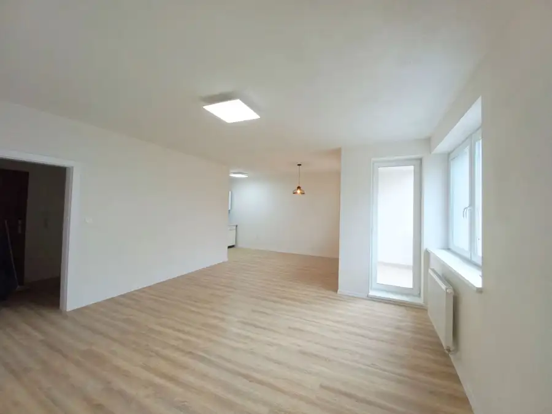
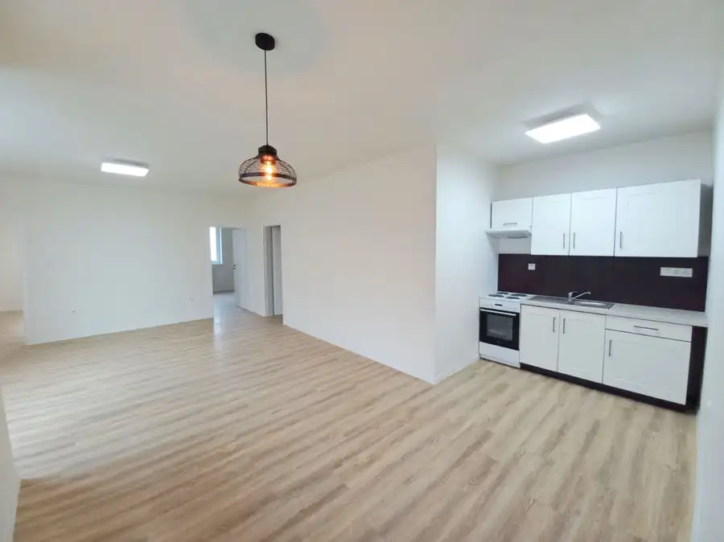
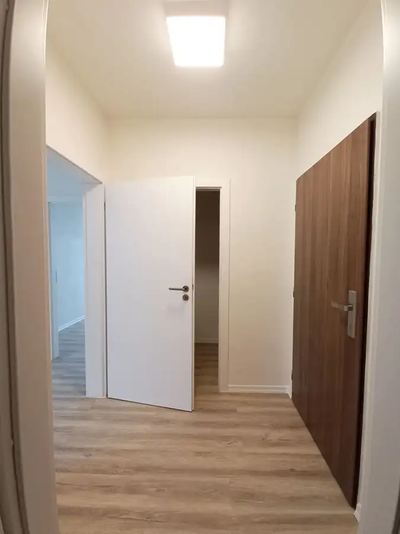
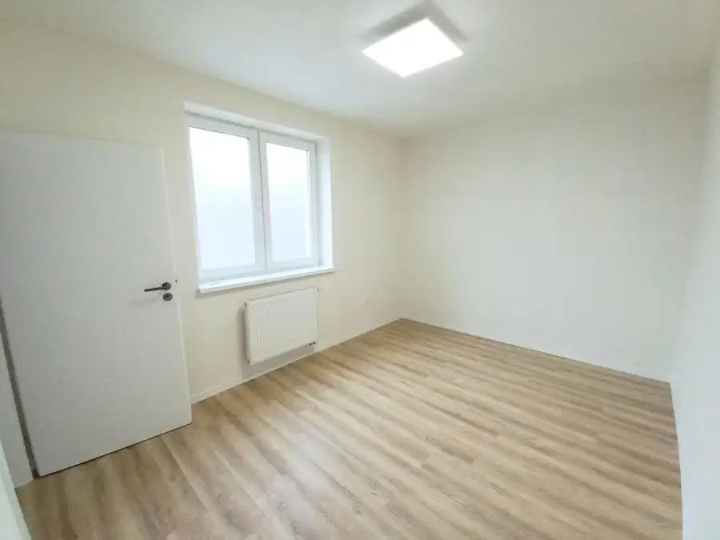
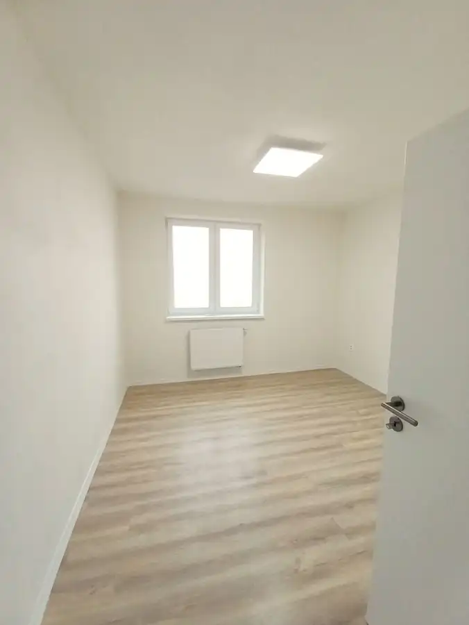

3-izbový byt s balkónom a vlastným parkovacím miestom.Novostavba Žarec, Balkón, Pivnica – Čadca Voľný IHNEĎ
Čadca





- Dispozícia3-izbový
- Plocha69 m²
- Poschodie2. z 8
- StavNovostavba
- VlastníctvoOsobné
- Energetická triedaA
O nehnuteľnosti
Realitná kancelária MENÍME BÝVANIE Vám exkluzívne ponúka na dlhodobý prenájom priestranný 3-izbový byt v obľúbenej lokalite Žarec na ulici Antona Bernoláka v Čadci.Byt sa nachádza v modernom bytovom dome s výťahom na 2. poschodí a je ideálnou voľbou pre všetkých ktorí hľadajú pokojné a kvalitné bývanie s vlastným parkovaním.Byt bude voľný IHNEĎ.Základné informácie•Lokalita: Čadca – Žarec, ul. Antona Bernoláka •Výmera bytu: 69 m² •Balkón: 3,38 m² •Poschodie: 2. •Výťah •Pivničná kobka v suteréne •Vlastné parkovacie miesto priamo pri bytovom dome •Dlhodobý prenájom na 2 roky s možnosťou predĺženia DispozíciaByt pozostáva z:•vstupnej chodby •obývacej izby spojenej s kuchyňou •dvoch samostatných izieb •kúpeľne s WC•balkóna •pivničnej kobky Vybavenie bytuByt sa prenajíma nezariadený, čo novému nájomcovi umožňuje zariadiť si interiér podľa vlastného štýlu.Súčasťou bytu je však: kuchynská linka sporák digestor moderné LED osvetlenie s diaľkovým ovládaním balkón pivničná kobka vlastné parkovacie miestoMesačné nájomné670 € / mesiacz toho:•450 € nájomné •220 € zálohové platby za energie a služby (tie sú flexibilné podľa počtu osôb)V zálohových platbách sú zahrnuté náklady na:•kúrenie •teplá a studená voda •správa bytového domu •upratovanie spoločných priestorov •zimná údržba •odvoz odpadu •elektrická energia Výška zálohových platieb sa každoročne upravuje podľa reálnej spotreby vyplývajúcej z vyúčtovania.Pri podpise nájomnej zmluvy sa uhrádza•1× mesačné nájomné vopred 670 € •1× depozit vo výške 1 340 € (dve mesačné platby) Spolu pri podpise zmluvy: 2 010 €Podmienky nájmu•voľný IHNEĎ•nájom na dobu aspoň 2 rokov s možnosťou aj na dlhšie•nájomné sa uhrádza vždy mesačne vopred do 20. dňa mesiaca •nefajčiari •domáce zvieratá nie sú povolené resp. po dohodePri ukončení nájmu pred uplynutím dohodnutej doby prenájmu prepadá jedna mesačná platba z depozitu podľa podmienok nájomnej zmluvy.Po ukončení nájmu bude depozit vrátený po vyúčtovaní energií a odovzdaní bytu v stave zodpovedajúcom bežnému opotrebeniu.Prečo si vybrať práve tento byt? moderná novostavba obľúbená lokalita Žarec vlastné parkovacie miesto v cene balkón pivničná kobka výťah priestranných 69 m² kvalitná občianska vybavenosť v okolí upratovanie spoločných priestorov zabezpečuje správcovská spoločnosť ideálny pre pár aj rodinuAk hľadáte dlhodobé bývanie v pokojnej časti Čadce, kde budete mať všetko potrebné na dosah a zároveň komfort vlastného parkovania, tento byt je pripravený práve pre Vás. 0944 169 263 gajdosikova@menimebyvanie.sk
Parametre
- Bezpečnosť
- Bezpečnostné dvere
- Cena vrátane energií
- Áno
- Druh
- 3 izbový byt
- Dátum zverejnenia
- 13. 07. 2026
- Energetický certifikát budovy
- A
- Podlažie
- 2
- Počet balkónov
- 1
- Počet izieb / miestností
- 3
- Počet nadzemných podlaží
- 8
- Počet pivníc
- 1
- Počet spální
- 1
- Počet vonkajších parkovacích miest
- 1
- Rok výstavby
- 2021
- Stav nehnuteľnosti
- Novostavba
- Typ
- Prenájom
- Typ konštrukcie
- Panelová
- Vlastníctvo
- Osobné
- Vybavenie
- Balkón, Pivnica, Vonkajšie parkovacie miesto, Výťah, Technická miestnosť, Vyhradené parkovanie, Detské ihrisko, Kočikáreň
- Úžitková plocha
- 69 m²